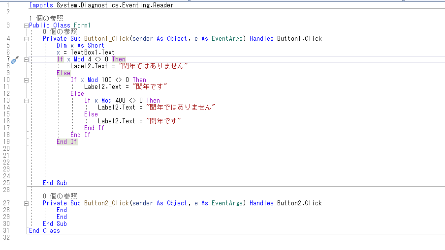
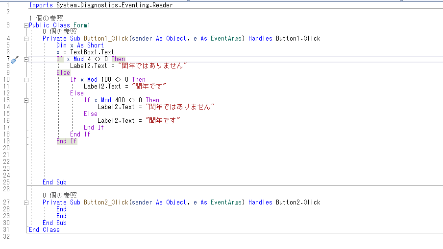

なぜ「ITに？」
プログラミングとの出会い
 

きっかけはほんの些細なことでした。ちょうど、ITパスポートを取得し、IT業界に興味を持っていた私は、大学１年の後期にプログラミングの授業を取りました。授業では初心者でも比較的わかりやすい「VB」で初めてプログラミングを行いました。最初は、「英語の羅列でとても難しそう」というイメージがありました。実際、「配列」のところで躓くことや、演習問題をやるのに時間をかけてしまうことが多々ありました。ですが、「難しさ」を感じたと同時に「面白さ」も感じたんです。
「理論立てて、筋道が通るようにコードを組むこと」
「同じ出力でもいろんなパターンがある自由度」
そういったところに、魅力を感じました。試行錯誤のうち、完成したときはとてもやりがいを感じました。
そこから、私はプログラマーという職種に興味を持つようになり、IT業界を志望するようになりました。
目指すにあたって
目指すにあたって、少しでもプログラミングを学びたいという思いから、私は学内でHP制作を最終的に行う授業を履修しました。そこでは、基礎的なHTML/CSSを学びました。自分が作成したものが視覚的にわかりやすくわかるため、とても面白いなと感じました。
そこから、さらにプログラミングをやりたいと感じ、私は「プログラミングサークル」に入ることを決意しました。入部して早々、「アイディアソン」というイベントでチーム開発を経験しました。５月から６月の名大祭に向けて、１ヶ月ほど短期でゲームを７人のチームで製作しました。私は初心者ということもあり、デザインを主に行いました。プログラミング自体はできなかったですが、「１つプロジェクトに参加できた経験」「UnityやGit、GitHUBなどのプログラマーなら知っているツールを初めて知って、使用できた経験」はとても貴重でした。また、プログラミングの知識や技術に長けた仲間たちと関わっていくなかで、さらに自身を成長させたいと感じました
今、現在では私自身の興味から「写真スポット共有アプリ」を製作しようと仲間たちと計画しており、そこから実践的にプログラミングを学ぼうと考えています。